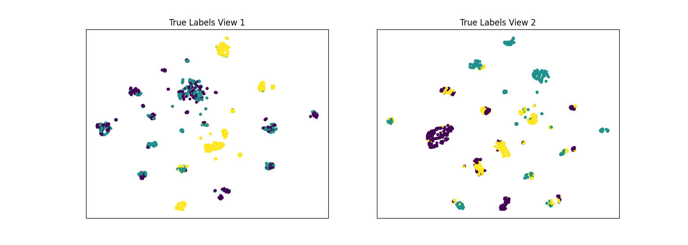
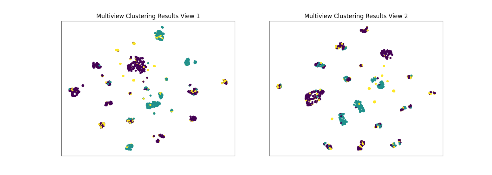

Note
Click here to download the full example code
Conditional Independence of Views on Multiview Spectral Clustering¶
The co-training framework relies on the fundamental assumption that data views are conditionally independent. In this tutorial we test that assumption by examining the multiview spectral clustering algorithm, which is based on the co-training framework, on synthetic multiview datasets under different conditions related to independence between the views conditioned on true class labels.
# License: MIT
import numpy as np
import scipy as scp
from mvlearn.cluster.mv_spectral import MultiviewSpectralClustering
from sklearn.cluster import SpectralClustering
from sklearn.metrics import normalized_mutual_info_score as nmi_score
from sklearn.datasets import fetch_covtype
import matplotlib.pyplot as plt
from sklearn.manifold import TSNE
import warnings
warnings.filterwarnings("ignore")
RANDOM_SEED = 10
Artificial dataset withconditional independence assumption between views¶
Here, we create an artificial dataset where the conditional independence assumption between views, given the true labels, is enforced. Our artificial dataset is derived from the forest covertypes dataset from the scikit-learn package. This dataset is comprised of 7 different classes, with with 54 different numerical features per sample. To create our artificial data, we will select 500 samples from each of the first 6 classes in the dataset, and from these, construct 3 artificial classes with 2 views each.
def get_ci_data(num_samples=500):
# Load in the vectorized news group data from scikit-learn package
cov = fetch_covtype()
all_data = np.array(cov.data)
all_targets = np.array(cov.target)
# Set class pairings as described in the multiview clustering paper
view1_classes = [1, 2, 3]
view2_classes = [4, 5, 6]
# Create lists to hold data and labels for each of the classes across
# 2 different views
labels = [num for num in range(len(view1_classes))
for _ in range(num_samples)]
labels = np.array(labels)
view1_data = list()
view2_data = list()
# Randomly sample items from each of the selected classes in view1
for class_num in view1_classes:
class_data = all_data[(all_targets == class_num)]
indices = np.random.choice(class_data.shape[0], num_samples)
view1_data.append(class_data[indices])
view1_data = np.concatenate(view1_data)
# Randomly sample items from each of the selected classes in view2
for class_num in view2_classes:
class_data = all_data[(all_targets == class_num)]
indices = np.random.choice(class_data.shape[0], num_samples)
view2_data.append(class_data[indices])
view2_data = np.concatenate(view2_data)
# Shuffle and normalize vectors
shuffled_inds = np.random.permutation(num_samples * len(view1_classes))
view1_data = np.vstack(view1_data)
view2_data = np.vstack(view2_data)
view1_data = view1_data[shuffled_inds]
view2_data = view2_data[shuffled_inds]
magnitudes1 = np.linalg.norm(view1_data, axis=0)
magnitudes2 = np.linalg.norm(view2_data, axis=0)
magnitudes1[magnitudes1 == 0] = 1
magnitudes2[magnitudes2 == 0] = 1
magnitudes1 = magnitudes1.reshape((1, -1))
magnitudes2 = magnitudes2.reshape((1, -1))
view1_data /= magnitudes1
view2_data /= magnitudes2
labels = labels[shuffled_inds]
return [view1_data, view2_data], labels
Creating a function to perform both singleview and multiview clustering¶
def perform_clustering(seed, m_data, labels, n_clusters):
# Singleview spectral clustering
# Cluster each view separately
s_spectral = SpectralClustering(
n_clusters=n_clusters, random_state=RANDOM_SEED, n_init=100)
s_clusters_v1 = s_spectral.fit_predict(m_data[0])
s_clusters_v2 = s_spectral.fit_predict(m_data[1])
# Concatenate the multiple views into a single view
s_data = np.hstack(m_data)
s_clusters = s_spectral.fit_predict(s_data)
# Compute nmi between true class labels and singleview cluster labels
s_nmi_v1 = nmi_score(labels, s_clusters_v1)
s_nmi_v2 = nmi_score(labels, s_clusters_v2)
s_nmi = nmi_score(labels, s_clusters)
print('Singleview View 1 NMI Score: {0:.3f}\n'.format(s_nmi_v1))
print('Singleview View 2 NMI Score: {0:.3f}\n'.format(s_nmi_v2))
print('Singleview Concatenated NMI Score: {0:.3f}\n'.format(s_nmi))
# Multiview spectral clustering
# Use the MultiviewSpectralClustering instance to cluster the data
m_spectral = MultiviewSpectralClustering(
n_clusters=n_clusters, random_state=RANDOM_SEED, n_init=100)
m_clusters = m_spectral.fit_predict(m_data)
# Compute nmi between true class labels and multiview cluster labels
m_nmi = nmi_score(labels, m_clusters)
print('Multiview Concatenated NMI Score: {0:.3f}\n'.format(m_nmi))
return m_clusters
Creating a function to display data and the results of clustering¶
The following function plots both views of data given a dataset and corresponding labels.
def display_plots(pre_title, data, labels):
# plot the views
fig, ax = plt.subplots(1, 2, figsize=(14, 5))
dot_size = 10
ax[0].scatter(new_data[0][:, 0], new_data[0][:, 1], c=labels, s=dot_size)
ax[0].set_title(pre_title + ' View 1')
ax[0].axes.get_xaxis().set_visible(False)
ax[0].axes.get_yaxis().set_visible(False)
ax[1].scatter(new_data[1][:, 0], new_data[1][:, 1], c=labels, s=dot_size)
ax[1].set_title(pre_title + ' View 2')
ax[1].axes.get_xaxis().set_visible(False)
ax[1].axes.get_yaxis().set_visible(False)
plt.show()
Comparing the performance with conditionally independent views¶
The co-training framework relies on the fundamental assumption that data views are conditionally independent. If all views are informative and conditionally independent, then Multiview Spectral Clustering is expected to produce higher quality clusters than Singleview Spectral Clustering, for either view or for both views concatenated together. Here, we will evaluate the quality of clusters by using the normalized mutual information metric, which is essentially a measure of the purity of clusters with respect to the true underlying class labels.
As we see below, Multiview Spectral Clustering produces clusters with lower purity than those produced by Singleview Spectral clustering on the concatenated views, which is surprising.
data, labels = get_ci_data()
m_clusters = perform_clustering(RANDOM_SEED, data, labels, 3)
# Running TSNE to display clustering results via low dimensional embedding
tsne = TSNE()
new_data = list()
new_data.append(tsne.fit_transform(data[0]))
new_data.append(tsne.fit_transform(data[1]))
display_plots('True Labels', new_data, labels)
display_plots('Multiview Clustering Results', new_data, m_clusters)
- 
- 
Out:
Singleview View 1 NMI Score: 0.331
Singleview View 2 NMI Score: 0.500
Singleview Concatenated NMI Score: 0.702
Multiview Concatenated NMI Score: 0.555
Artificial dataset with conditionally dependent views¶
Here, we create an artificial dataset where the conditional independence assumption between views, given the true labels, is violated. We again derive our dataset from the forest covertypes dataset from sklearn. However, this time, we use only the first 3 classes of the dataset, which will correspond to the 3 clusters for view 1. To produce view 2, we will apply a simple nonlinear transformation to view 1 using the logistic function, and we will apply a negligible amount of noise to the second view to avoid convergence issues. This will result in a dataset where the correspondance between views is very high.
def get_cd_data(num_samples=500):
# Load in the vectorized news group data from scikit-learn package
cov = fetch_covtype()
all_data = np.array(cov.data)
all_targets = np.array(cov.target)
# Set class pairings as described in the multiview clustering paper
view1_classes = [1, 2, 3]
# Create lists to hold data and labels for each of the classes across
# 2 different views
labels = [num for num in range(len(view1_classes))
for _ in range(num_samples)]
labels = np.array(labels)
view1_data = list()
view2_data = list()
# Randomly sample 500 items from each of the selected classes in view1
for class_num in view1_classes:
class_data = all_data[(all_targets == class_num)]
indices = np.random.choice(class_data.shape[0], num_samples)
view1_data.append(class_data[indices])
view1_data = np.concatenate(view1_data)
# Construct view 2 by applying a nonlinear transformation
# to data from view 1 comprised of a linear transformation
# and a logistic nonlinearity
t_mat = np.random.random((view1_data.shape[1], 50))
noise = 0.005 - 0.01*np.random.random((view1_data.shape[1], 50))
t_mat *= noise
transformed = view1_data @ t_mat
view2_data = scp.special.expit(transformed)
# Shuffle and normalize vectors
shuffled_inds = np.random.permutation(num_samples * len(view1_classes))
view1_data = np.vstack(view1_data)
view2_data = np.vstack(view2_data)
view1_data = view1_data[shuffled_inds]
view2_data = view2_data[shuffled_inds]
magnitudes1 = np.linalg.norm(view1_data, axis=0)
magnitudes2 = np.linalg.norm(view2_data, axis=0)
magnitudes1[magnitudes1 == 0] = 1
magnitudes2[magnitudes2 == 0] = 1
magnitudes1 = magnitudes1.reshape((1, -1))
magnitudes2 = magnitudes2.reshape((1, -1))
view1_data /= magnitudes1
view2_data /= magnitudes2
labels = labels[shuffled_inds]
return [view1_data, view2_data], labels
Comparing the performance with conditionally dependent views¶
As mentioned before, the co-training framework relies on the fundamental assumption that data views are conditionally independent. Here, we will again compare the performance of singleview and multiview spectral clustering using the same methods as before, but on our conditionally dependent dataset.
As we see below, Multiview Spectral Clustering does not beat the best Singleview spectral clustering performance with respect to purity, since that the views are conditionally dependent.
data, labels = get_cd_data()
m_clusters = perform_clustering(RANDOM_SEED, data, labels, 3)
Out:
Singleview View 1 NMI Score: 0.327
Singleview View 2 NMI Score: 0.160
Singleview Concatenated NMI Score: 0.239
Multiview Concatenated NMI Score: 0.308
Total running time of the script: ( 1 minutes 48.499 seconds)